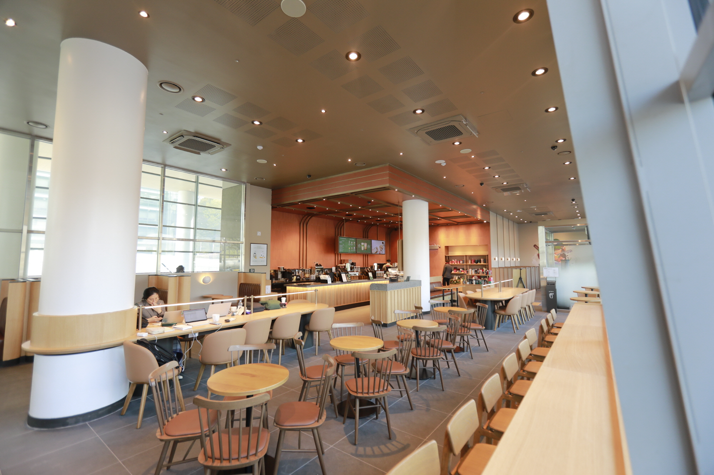
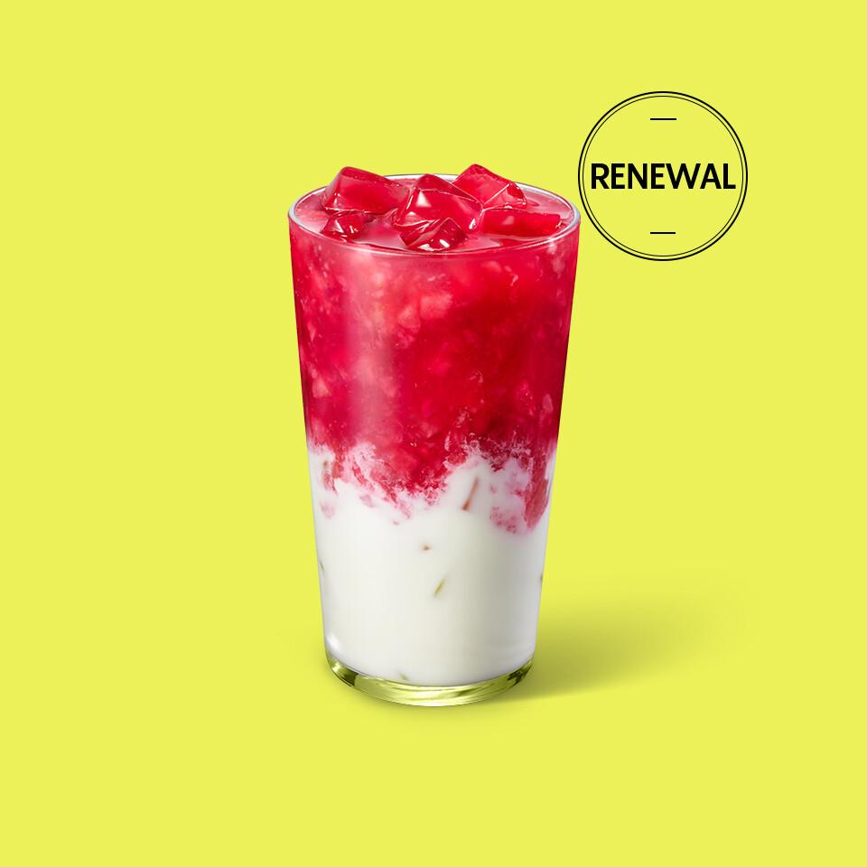
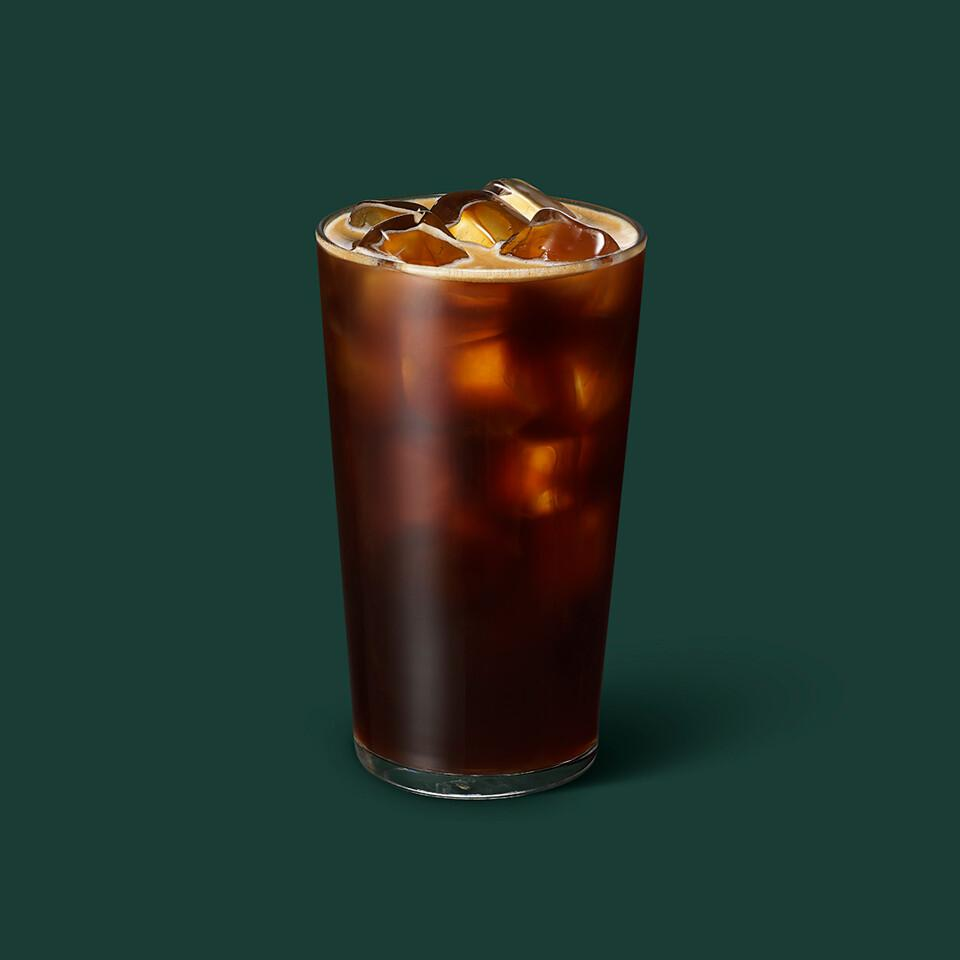

가천대 스타벅스
1. 오시는 길
주소: 경기도 성남시 수정구 성남대로 1342
가천대역 1번출구에서 내려서 올라오면 바로 오른쪽에 있습니다.
2. 대표 메뉴
- 씨솔트 커피
- 구름 처럼 부드러운 씨솔트 폼과
- 번트 카라멜의 중독성 강한
- 단짠단짠 조합의 콜드 브루

- 딸기라떼
- 설향 딸기 본연의 상콤&달콤한
- 과육과 우유의 부드러움이
- 어우러진 카페인 프리 음료

- 아메리카노
- 진한 에스프레소에 시원한
- 정수물과 얼음을 더하여
- 시원하게 즐길 수 있는 커피
3. 주차 공간 및 주차 요금
1. 주차가능(무료주차 2시간)
2. 주차 가능 위치: 가천대학교 내 주차장
3. 주차 할인 방법: 1만원 이상 구매 후 영수증에 도장 날인